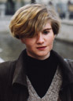

|

|
NOTES
Catherine Yakovina lives in St.Petersburg (formerly Leningrad), Russia.
Born in 1967 in Leningrad, she graduated from the State University Leningrad
in 1990, then studied art privately. She has had numerous shows world-wide,
in St. Petersburg, New York, London and elsewhere. She is an artist
of great versatility, computer art being only one of the areas that she
has explored. This exhibit here is an overview of her work. It includes
one example of her computer art, but also examples of body art, drawings,
photographs, mixed media, watercolors and gouche. She says, "I think art
is necessary for the evolution of our souls."
|